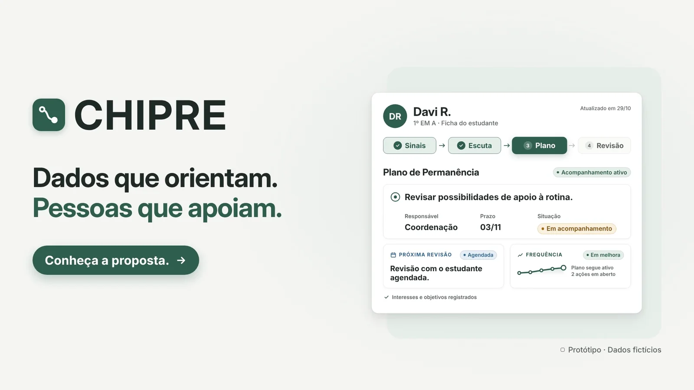

C.H.I.P.R.E.
Central de Habilidades, Inteligência e Personalização de Recursos Educacionais
A prototype built by the Legião do Chipre team at the UniCesumar × Elotech Hackathon, during WorkInTech 2026, for the school dropout challenge. Instead of only flagging who is at risk, it helps a school understand what is pushing a student out and route the problem to whoever can solve it. The project won 2nd place.
- Event
- WorkInTech 2026 Hackathon · UniCesumar × Elotech
- Challenge
- “Before it's too late”: school dropout
- Format
- Prototype with fictional data
- Result
- 2nd place, as a team

Hackathon context
The hackathon was part of WorkInTech week at UniCesumar, from October 28 to 30, 2026. It was run by UniCesumar and Axion, the university's IT student-run company, and sponsored by Elotech, a public-sector software company based in Maringá, Brazil. The theme was “Education that reaches everyone: technology against barriers to learning”, and the team chose Challenge 1, “Before it's too late”, on school dropout.
The rules shaped the project from the start: use only fictional or public open data, design for the people who would use it every day, propose something a school network could realistically adopt, and never expose, label or punish a student — a person always makes the decision.
Problem and goal
The problem
Students show signs before they leave — absences go up, grades go down — but schools often notice only after they're gone. According to Brazil's 2024 PNAD Contínua Educação survey (IBGE), 42% of young people without a high school diploma cite the need to work as the main reason.
Systems that predict who will drop out already exist. The team concluded that the bottleneck is something else: what happens after the alert.
The goal
Give schools time and a path to act: listen to the student before deciding, understand the barrier behind the absences and bring that barrier to whoever can solve it — with no labels, rankings or automated messages.
The idea: from signal to support
The inspiration came from churn analysis in Customer Success teams, which spot customers about to cancel and treat each one differently. In C.H.I.P.R.E., every case goes through four steps:
- SignalA drop compared with the student's own pattern. The system doesn't invent a cause.
- ListenA person talks to the student; what they report is kept apart from what has been verified.
- SupportOptions registered by the school that fit the student's routine.
- ReviewImprovement doesn't close the case: follow-up continues with an owner and a deadline.
What sets it apart is looking beyond the individual: matching absences among students who share a bus route, a shift or a day become a single collective action, sent to the department responsible.
Teamwork
How the team worked
Legião do Chipre split the work between fictional data, analysis rules, the interface and the pitch, and kept a shared log of product decisions throughout the three days.
Use of AI
As the rules allowed, the team used AI as support to build the prototype's interface. The solution design and the product decisions were the team's own.
The prototype
What was demonstrated is an MVP of the follow-up workflow, with signals calculated on fictional data. The machine learning model described below is part of the implementation proposal, not of the prototype that was presented.
- Drop signals calculated on fictional data and compared with the student's own pattern.
- Student profile with the Signals, Listen, Plan and Review steps.
- Retention plan with an owner, a deadline, a status and the next review.
- Collective barriers: matching absences by route, shift or day.
- Proposed two-layer engine: explainable rules across six areas (attendance, performance, behavior and climate, socioeconomic, family and school history), then a model trained on the network's own history.
- Feasibility: it uses data schools already have (class records, grades, incident reports and enrollment).
Product decisions
- Levels describe the school's action, not the student: Observe, Talk, Intervene and Mobilize the network. No ranking and no percentage next to a name.
- Social context alone never triggers an alert. Only changes observed at school open a case.
- Left out of the calculation: race, sex, disability and health.
- No automated messages. A person always talks to the student and the family.
Result
- 2nd place at the UniCesumar × Elotech Hackathon, won by the Legião do Chipre team.
- A demo built around one complete fictional case: from a drop in attendance to a collective action with the transportation department.
- Proposed metrics for a pilot in a municipal school network: how early the first signal appears, how many support actions actually happen and how many collective barriers get solved.
What I learned
- Starting from the real problem — what happens after the alert — instead of the technology.
- Treating the protection of the people affected as a product requirement, not a detail.
- Being clear with the judges about what the prototype does and what is still a proposal.
- Splitting work and logging decisions as a team with only hours to deliver.
Gallery
Frames from the team's presentation video, showing prototype screens with fictional data.